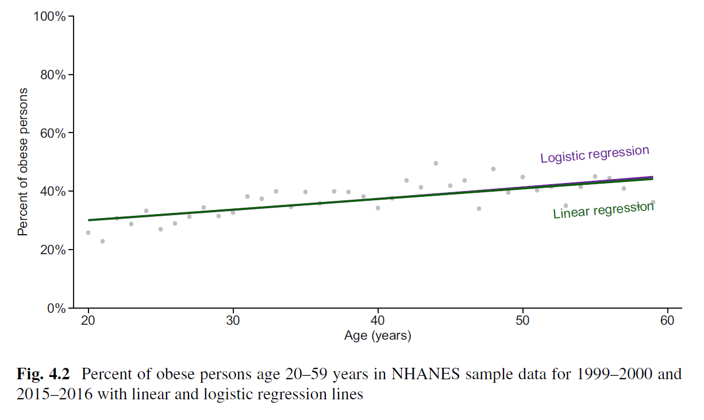
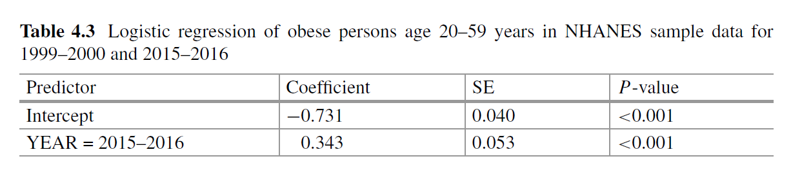
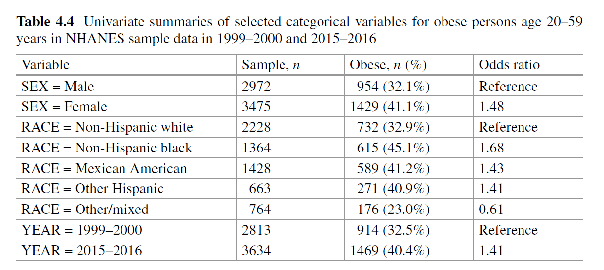
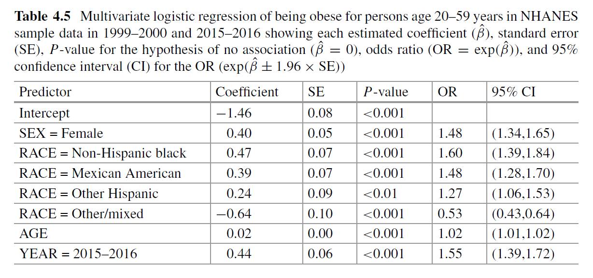
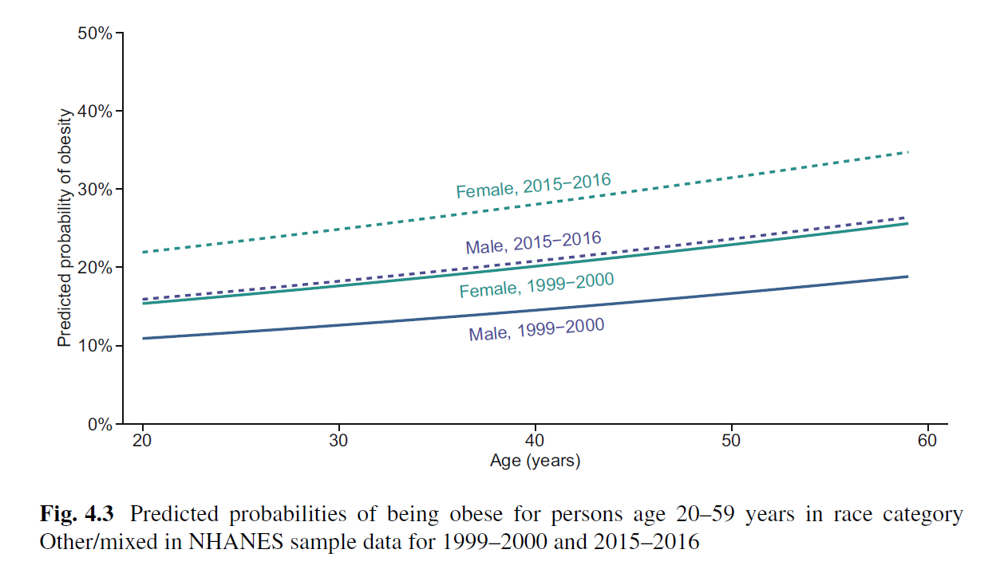
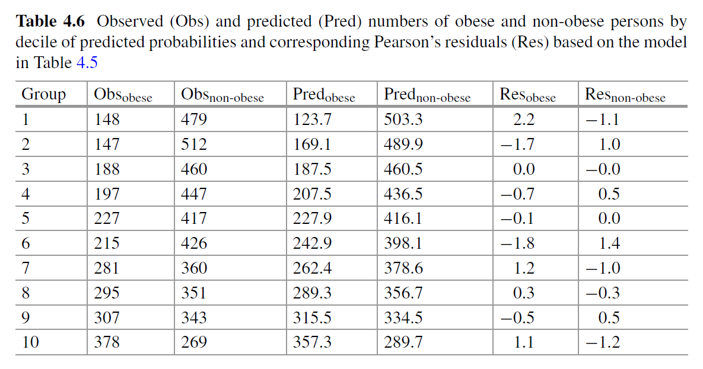
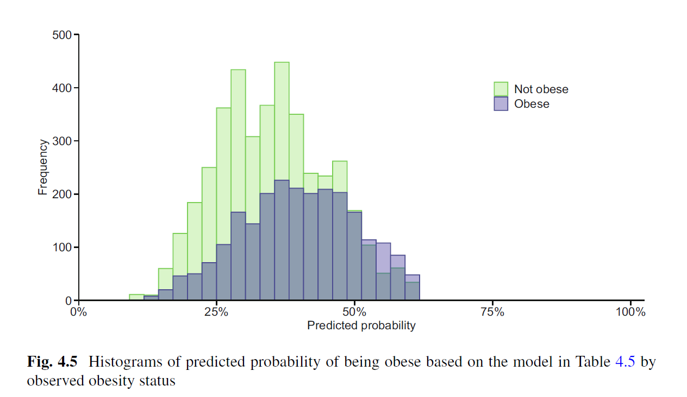
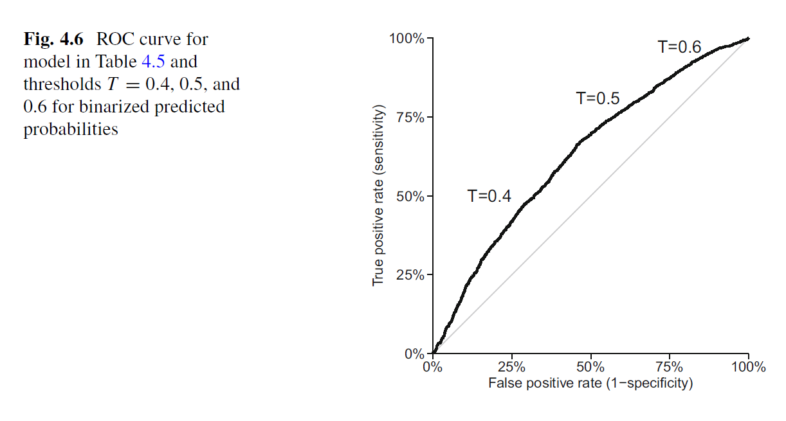
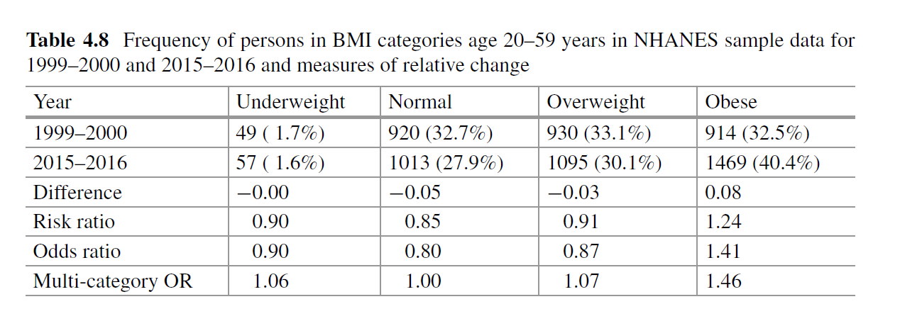
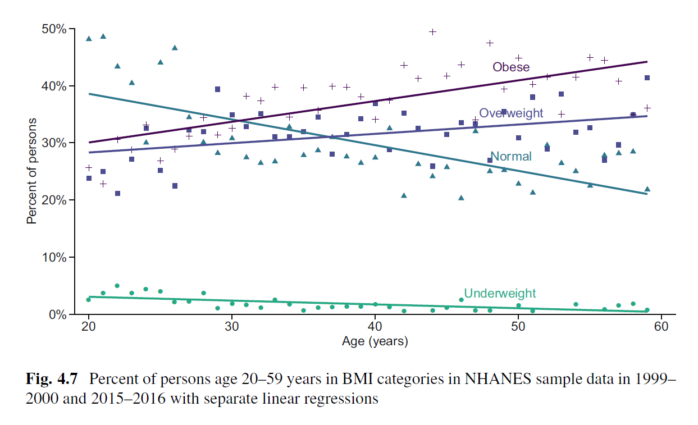

Chapter 4 Binary and Categorical data Analysis
This chapter builds a regression framework for binary and categorical outcomes, where the goal is to determine how the distribution of the outcome depends on covariates.
The most commonly used model for binary outcomes is logistic regression.
Logistic regression coefficients are directly interpretable as relative odds of a positive outcome corresponding to changes in covariate values.
For categorical outcomes, we introduce multinomial regression, which produces coefficients that are interpretable as a multi-category version of relative odds.
For both outcomes, we introduce marginal effects as a way to estimate effects of covariates on outcome probabilities rather than odds.
4.1 Introduction
Binary and categorical outcomes arise in many health services and health outcome research studies.
Examples of binary outcomes
presence or absence of certain behaviors or conditions, such as smoking, wearing a seatbelt, or having diabetes.
Occurrence or nonoccurrence of disease events, such as hospital re-admission after surgery, in-hospital mortality, or cancer progression after primary treatment.
Categorical or multinomial outcomes have more than two choices.
Example
- body mass index (BMI) can be categorized as underweight, normal weight, overweight, or obese.
- While categorical outcomes like BMI have a logical order, outcomes like race/ethnicity have no natural ordering.
Unlike continuous outcomes, categorical outcomes do not have a default numerical scale.
Consequently, standard statistical summaries such as the mean, median, or variance are not meaningful.
Even if the outcome is coded using numbers, these should not be interpreted quantitatively.
- Example, a survey may ask respondents to report their health status by choosing 1 (excellent), 2 (very good), 3 (good), 4 (fair), or 5 (poor).
4.2 Binary Outcomes
A binary outcome, \(Y\) , can take one of two possible values that we can generically label positive or negative and denote as 1 or 0, respectively.
Example, in a study of 10-day re-admissions after hospitalization
- Readmitted (\(Y=1\)) or not (\(Y=0\))
Example, in a study of chronic disease
- Have diabetes (\(Y=1\)) or not (\(Y=0\));
Example, in a study of medical costs in a given year
- Have positive (\(Y=1\)) or zero (\(Y=0\)) medical expenditures.
We can think of a binary outcome as a random variable with distribution comprised of the probabilities that \(Y=1\) and \(Y=0\). (This is called a Bernoulli distribution)
Because these two probabilities must sum to one, the distribution is completely determined by one of the two probabilities, which is conventionally taken to be the probability of a positive outcome, \(P(Y=1)\).
When considering the association between a covariate and a binary outcome, therefore, we need simply to understand how this probability is associated with the covariate.
Regardless of the application setting, we can observe that the mean of the binary outcome \(Y\) is the same as the proportion of positive outcomes, or \(E(Y)=P(Y=1)\).
As a practical example, we will examine how the proportion of obese persons changes over time and by age.
- We will use data from the National Health and Nutrition Examination Survey (NHANES), which is the most authoritative source of data on the body mass index (BMI) in the United States.
4.2.1 Two-Way Tables
The National Health and Nutrituion Examination Survey (NHANES) dataset include 6864 individuals age 20–59 years: 3046 from the 1999–2000 survey and 3818 from the 2015–2016 survey.
Mean BMI increased from 28.4 kg/m2 in 1999–2000 to 29.6 kg/m2 in 2015–2016, an increase of 1.2 units. This might not be a public health concern if it were due to changes in BMI within the underweight or normal weight groups.
- However, it would be concerning if it indicated an increase in overweight and obese persons as this would affect the incidence of chronic diseases, such as heart failure and diabetes.
 *Statistics for Health Data Science, Ruth et al., Springer
*Statistics for Health Data Science, Ruth et al., Springer
The two-way table shown in Table presents the frequency of obese and non-obese persons for the two calendar years. The table shows an increase in the proportion obese from 32.5% to 40.4% in 15 years.
The absolute 8% increase has the same meaning regardless of the baseline proportion in 1999–2000. Sometimes the relative increase is reported, in which case the baseline proportion matters.
For example, when the baseline proportion is 5%, a 10% relative increase translates into an absolute 0.5% increase; when the baseline proportion is 50%, a 10% relative increase translates into an absolute 5% increase.
The relative increase is often expressed using a risk ratio or relative risk (RR). In the obesity example, the RR for obesity in 2015–2016 relative to 1999–2000 is calculated as:
\[ RR = \frac{Proportion \,\,\, obese \,\,\, in \,\,\, 2015-2016}{Proportion \,\,\, obese \,\,\, in \,\,\, 1999-2000} = \frac{0.404}{0.325} = 1.24. \]
An RR close to 1 means there is little relative change; an RR that is substantially smaller or larger than 1 means there is a substantial relative change.
In this example, the RR of 1.24 means the proportion obese in 2015–2016 represented a 24% increase relative to 1999–2000.
The change in RR across values of a covariate (calendar year in this example) measures the strength of association between the outcome and that covariate.
An alternative measure of association is the odds ratio or relative odds (OR).
The “odds” is a well-known quantity in gambling. It is itself a ratio, namely, the probability of the positive outcome divided by the probability of the negative outcome, i.e., \(P(Y=1)/P(Y=0)\).
When the covariate is binary, the OR is simply the ratio of the odds of the outcome in each group. In our obesity example, calendar year is a binary covariate, and the OR is defined as:
\[ OR=\frac{(Proportion\,\,\, obese \,\,\,in \,\,\,2015–2016)/(Proportion\,\,\, not \,\,\, obese \,\,\,in \,\,\,2015–2016)} {(Proportion\,\,\, obese\,\,\, in\,\,\, 1999–2000)/(Proportion\,\,\, not\,\,\, obese\,\,\, in\,\,\, 1999–2000)}. \]
- Calculation of the OR from the two-way table is simple; it is just the product of the diagonal elements divided by the product of the off-diagonal elements:
\[ OR=\frac{(Number\,\,\, not\,\,\, obese\,\,\, in\,\,\, 1999–2000) \times (Number\,\,\, obese\,\,\, in\,\,\, 2015–2016)} {(Number\,\,\, obese\,\,\,\ in\,\,\, 1999–2000) \times (Number\,\,\, not\,\,\, obese\,\,\, in\,\,\, 2015–2016)} \]
\[ =\frac{1899 \times 1469}{914 \times 2165}=1.41 \]
The OR is symmetric, with the roles of the outcome and the covariate interchangeable.
While the RR is intuitive and readily interpretable, the OR is neither.
However, as we will see, the OR is what is typically modeled. Consequently, it is helpful to observe a few properties of the OR:
The OR indicates the same direction of association as the RR. If there is no association between the outcome and covariate, both the OR and RR equal 1. Also, the OR > 1 whenever the RR > 1, and the OR < 1 whenever the RR < 1.
If the outcome is associated with the covariate, the OR is always farther from 1 than the RR. For example, if OR 1.41, we know that 1 < RR < 1.41.
For rare positive outcomes, the OR and the RR are similar. Since odds \(P(Y=1)/P(Y=0)\) is close to \(P(Y= 1)\) when \(P(Y=0)\) is close to 1, the ratio of odds is close to the ratio of probabilities.
The third property is handy because it means we can interpret the OR as being approximately equal to the RR when positive outcomes are uncommon. Unfortunately, this is not true when positive outcomes are common.
When \(P(Y=1)\) is non-trivial, \(P(Y=0)\) is not close to 1, and this can make the OR and RR dissimilar.

Table 4.2 shows the RR and the OR for different instances of a setting with a binary covariate \(X\).
When the probabilities of a positive outcome are very small, the OR is close to the RR.
But when the probabilities of positive outcomes are not very small, the OR is not close to the RR.
4.3 Linear Regression with a Binary Outcome
- Can we use a linear regression to examine the association between a binary outcome and a covariate?

Figure 4.1 shows a scatterplot of obesity status versus age in the NHANES sample data.
- To avoid “overplotting” points with the same age and obesity status, the size of each point is proportional to the number of observations.
While a linear regression line can technically be calculated, it is not immediately clear what it represents.
Thinking of each age as defining a sub-population, we can try to model the proportion of obese persons across sub-populations.
Noting that the proportion of obese persons at each age is just the mean of the obesity outcome at that age, this framing of the problem exactly mirrors the idea behind linear regression.

The dots in Fig. 4.2 show the proportion of obese persons at each age. The fitted linear regression is shown as the blue line.
While the linear model reasonably captures the proportion of obese persons across the age range considered in this example, the linear regression formulation does not constrain the predicted probabilities to be between zero and one.
When outcomes are rare, the predictions may even be outside these bounds. We would not trust a model that could predict the percent of obese persons to be 12% or 131%!
Furthermore, we should be concerned about making any inferences when a linear regression that assumes a continuous, normally distributed outcome variable is applied to a discrete, non-normal outcome.
Binary regression constrains the regression equation to be between zero and one, and it represents a coherent way of addressing the discrete, non-normal nature of the data.
The orange line in Fig. 4.2 shows the prediction from a logistic regression, the most popular type of binary regression. In our obesity example, the logistic regression is very close to the linear model for the range of data considered, but this is not always the case.
4.4 Logistic Regression
Logistic regression is a way to model the association between the probability of a positive outcome \(P(Y= 1)\) and one or more covariates \(X\) so that the regression line stays within the interval [0, 1].
How is this done?
To understand the reasoning behind logistic regression, recall that linear regression of a continuous outcome \(Y\) on a set of covariates \(X_1,\ldots, X_k\) has two parts:
\[ Y = \beta_0 + \beta_1X_1 +\cdots + \beta_kX_k + \epsilon, \]
where \(\beta_0 + \beta_1X_1 +\cdots + \beta_kX_k\) is the systematic part, determining the mean of \(Y\) in the sub-populations defined by the \(X\)s, and \(\epsilon\) the error term that reflects random deviation of a subject from the mean in that sub-population.
- However, with a binary outcome, this approach fails because
The systematic part for the probability \(P (Y= 1)\) can be smaller than 0 or larger than 1, an undesirable possibility
The error term has a very limited range of possible values and depends on the systematic part since the sum of the two parts must be either 0 or 1.
As the formulation “outcome = systematic part + error part” fails, we must adopt a different formulation to model binary outcomes.
A natural way is to think about the outcome of each person as being a result of a binary experiment, such as tossing a coin. The systematic part defines the probability of “success” of the experiment, corresponding to \(P(Y=1)\), and the random part of the model is replaced by a random result of the experiment.
Since the linear formulation for the systematic part does not guarantee that the model will conform to the 0, 1 range, a mathematical “trick” is required. This mathematical trick is simply a transformation of the systematic part from the linear formulation.
The most commonly used transformation is the logistic function, which yields:
\[ P(Y_i=1)=\frac{exp(\beta_0 + \beta_1X_{1i} + \cdots + \beta_kX_{ki})} {1 + exp(\beta_0 + \beta_1X_{1i} + \cdots + \beta_kX_{ki})}, \]
where \(Y_i\) is the outcome of subject \(i\) and \(X_{1i},\ldots, X_{ki}\) are the covariates.
Let’s think about why this model works.
Suppose that we have only one continuous covariate, \(X_1\), and suppose also that \(\beta_1\) is positive.
Then when \(X_1\) is positive and increases in magnitude, both the numerator and the denominator in Equation increase, and their ratio approaches 1.
Conversely, when \(X_1\) is negative and increases in magnitude, the numerator approaches 0, and the denominator approaches 1, so the ratio in Equation approaches 0.
More generally, the numerator is always less than the denominator by construction, so the ratio is always between 0 and 1.
Thus, this function is a perfect candidate to satisfy the requirements of a regression model for probabilities.
In Equation, the effect of the \(X\)s is additive and linear before the transformation, but the transformation generates a complicated, non-linear function for \(P(Y=1)\).
An equivalent formulation of this model preserves the linear specification for the \(X\)s but applies the inverse transformation to \(Y\).
This transformation is called the logit, and the formulation is as follows:
\[ logit[P(Y_i=1)]= log[\frac{P(Y_i = 1)}{P(Y_i=0)}]=\beta_0+\beta_1X_{1i}+\cdots +\beta_kX_{ki}. \]
Note that the logit is simply the natural logarithm of the odds.
Thus, the logistic regression model assumes that the log of the odds depends linearly on the covariates.
The transformation that produces logistic regression is only one of several available for binary outcomes.
In general, to convert the range of the systematic part to be between 0 and 1, any function that converts a number in the range \((-\infty ,\infty )\) to a number in 0, 1 in a sensible way will do the trick.
4.5 Interpretation of a Logistic Regression
4.5.1 A Single Binary Covariate
- Due to the form of the transformed response variable, logistic regression tells us how the log odds of a positive outcome (\(Y=1\)) changes when one of the \(X\)s change.

Table 4.3 is similar to that obtained in linear regression, where the standard error (SE) is a measure of uncertainty of the coefficient estimate and a p-value is given for the hypothesis test that each coefficient is equal to 0.
As in the linear model, the p-value is calculated by dividing the coefficient by its standard error and comparing the result to a standard normal distribution.
How can we interpret the estimate of 0.343 for the association with year?
This is not interpreted as the expected increase in Y on the original scale; it must be interpreted on the log odds scale.
Symbolically we have:
\[ logit[P (Y = 1 | X = 1)]− logit[P (Y = 1 | X = 0)]= 0.343. \]
- If we exponentiate both sides, we get:
\[ odds[P (Y = 1 | X = 1)]/odds[P (Y = 1 | X = 0)]= exp(0.343) = 1.41. \]
The exponentiated log odds ratio is simply the odds ratio.
Because the response variable was log transformed, the logistic model induces a multiplicative effect on the odds of \(Y=1\).
Thus, while linear regression is an additive model for the mean of the outcome, logistic regression is a multiplicative model for the odds.
Also notice that the result in this example (\(OR=1.41\)) is exactly the result we obtained in Sect. 4.2 using the two-way table.
Now look at the corresponding probabilities; this can be done with the help of above Equation:
\[ P (Y= 1| X= 0)= \frac{exp(−0.731)}{1 + exp(−0.731)}=0.325\\ P (Y= 1| X= 1)= \frac{exp(−0.731 + 0.343)}{1 + exp(−0.731 + 0.343)}=0.404 \]
Again, these are exactly the numbers obtained using the two-way table in Sect. 4.2.
A logistic regression with a single binary covariate is quite simple: it just replicates the calculations of the proportions and their odds in the comparison of two groups.
4.5.2 The General Case
In this subsection, we consider models with multiple covariates and work through issues with interpreting the results of a logistic regression.
We fit a logistic regression to the indicator of obesity (OBESE) with binary covariates SEX (with reference level male) and YEAR (with reference level 1999–2000), a five-level categorical covariate RACE (with reference level non-Hispanic white) coded as a set of four dummy variables and continuous covariate AGE (centered at 20 years, the youngest age in our analysis).
For this setup, the reference group is the subpopulation of non-Hispanic white men age 20 in 1999–2000.

Table 4.4 provides the fraction obese corresponding to each level of each covariate.
For non-reference levels, the odds of being obese relative to the reference level is also shown.
The OR for SEX is greater than 1, suggesting the risk of being obese is higher for women than for men.
This can also be seen by comparing the percentages: about 32% of men are obese compared to 41% of women.
For RACE, we see that the OR of the Other/mixed group is smaller than 1, indicating that persons in this group tend to be less at risk of obesity than the reference group (non-Hispanic white persons).
The ORs for the other RACE groups are greater than 1, and their order matches the ordering of the percentages of obese persons.

Table 4.5 provides the results of a logistic regression with multiple covariates.
The baseline category for YEAR is 1999–2000; the coefficient estimate for YEAR 2015–2016 is 0.44.
This tells us that, given AGE, SEX, and RACE, persons in 2015–2016 have a 0.44 increased log odds of being obese compared with persons in 1999–2000.
The corresponding odds ratio is 1.55; thus, in 2015–2016, the odds of being obese are 1.55 times higher than in 1999–2000. The ORs for the multivariate regression have a conditional interpretation in that they are interpretable as the change in the odds of being obese for the sub-population defined by the values of all the other covariates.
The interpretation of the coefficient in a logistic regression is similar in principle to a linear regression setting: we can think of it as the estimated effect of a one-unit change in the covariate holding the other covariates fixed. (Note: we use the term “effect” here for conciseness and not to imply causality [1].)
However, in a logistic regression, we are not estimating the effect on E(Y)—we’re estimating the effect on the log odds of \(Y=1\).
Thus, the coefficient of a categorical covariate is the estimated difference in log odds compared to the reference level.
For example, being a woman is associated with a 0.40 difference in the log odds of being obese compared to being a man.
Alternatively, being a woman is associated with 1.48 times the odds of being obese compared to being a man. The estimated association between covariate and log odd or odds of the outcome is the same for any race, persons of any age, and in either survey calendar year.
In the case of a continuous covariate, interpretation is similar.
For example, being 1 year older is associated with an increase in the log odds of being obese of 0.02 or, alternatively, an OR of 1.02.
This estimated association does not depend on the specific value of age, and it does not depend on the specific values of the other covariates.
To estimate the effect of a 10-year increase in age, we simply multiply the coefficient by 10, obtaining a difference in log odds of 0.2 and a corresponding OR of \(exp(0.2)=1.22\).
So far we have discussed how changes in covariates are associated with the log odds or odds of a positive response.
But we often want to know how changes in covariates are associated with the probability of a positive response.
This is generally easier to understand. As noted above (Sect. 4.2.1), the OR is sometimes interpretable as an approximate relative risk—i.e., a ratio of probabilities rather than a ratio of odds—but this interpretation is only valid when the outcome is rare.
When positive outcomes are not rare, the OR can be quite different from the relative risk. For example, a 1999 article in The New England Journal of Medicine that compared rates of referral to cardiac catheterization in African American and white patients found an OR of 0.6.
This result was considered to be evidence of a dramatic racial disparity in the receipt of cardiac catheterization, but the corresponding risk ratio was actually 0.93 [3]—much closer to 1!
The two measures were so different owing to a relatively high fraction of each group receiving a referral (92% of white patients and 89% of black patients).
This left rather small denominators for the odds in each group, which led to an odds ratio that completely misrepresented the relatively minor difference between the probabilities.
It is not infrequent to see results of logistic regression analyses interpreted in this way— the natural language of risk is probability, not odds.
So, what if we really want to understand our logistic regression results in terms of relative probabilities or differences in probabilities instead of relative odds and differences in log odds?
4.6 Interpretation on the Probability Scale
4.6.1 Estimating Probabilities
- Equation tells us how to calculate the probability of a positive outcome for any sub-population. For example, the probability of a positive outcome in the reference group of non-Hispanic white (NHW) men age 20 years in 1999–2000 is:
\[ P (Y =1 | NHW, Male, 20)= \frac{exp(−1.46)}{1 + exp(−1.46)}=0.188. \]
- If we want to estimate the probability for an otherwise similar woman, we simply add the coefficient of SEX:
\[ P (Y= 1| NHW, Female, 20)= \frac{exp(−1.46 + 0.40)}{1 + exp(−1.46 + 0.40)}=0.257, \]
- and if we want to estimate the probability for an otherwise similar woman age 52 years, we simply add the coefficient of AGE times 32 (= 52 − 20):
\[ P (Y= 1 | NHW, Female, 52)= \frac{exp(−1.46 + 0.40 + 0.02 × 32)}{1 + exp(−1.46 + 0.40 + 0.02 × 32)}=0.397. \]
Because interpreting ORs is not straightforward, we would like to define the effect of a covariate on the probability of a positive outcome, \(P(Y=1)\).
There are two types of effects for a covariate X:
- An additive effect (AE), equal to the absolute change in \(P(Y= 1| X)\) for a one-unit change in \(X\):
\[ AE = P (Y = 1 | X = 1) − P (Y = 1 | X = 0). \]
- A multiplicative effect (ME) equal to the relative change in \(P (Y= 1| X)\) for a one-unit change in \(X\):
\[ ME = P (Y = 1 | X = 1)/P (Y = 1 | X = 0). \]
The additive effect is sometimes referred to as a risk difference.
The multiplicative effect is the previously defined risk ratio. For either effect, we would ideally like an estimate that does not depend on the specific values of the other covariates, just as in linear regression.

Figure 4.3 shows why this is a tall order.
The figure shows predicted probabilities of being obese implied by the fitted logistic regression in Table 4.5 for persons in race category Other/mixed and different values of AGE, SEX, and YEAR.
One can observe that the predicted probabilities are not quite linear in the covariates.
This is a consequence of the logit transformation that converted the model from a linear to a non-linear model.
The model is only linear on the log odds scale—not on the original probability scale.
In fact, not only do the predicted probabilities increase non-linearly with age, but the effect of year differs depending on age.
This is reminiscent of the normal linear model with an interaction between age and year, which was a non-linear model.
The regression equation in this case does not explicitly include an interaction, but when converted to the probability scale, it is also non-linear.

The top panel of Fig. 4.4 shows the difference between the predicted probabilities in years 2015–2016 and 1999–2000 across values of SEX and AGE for RACE Other/mixed.
If the model were additive and linear on the probability scale, the differences would be similar for men and women and constant across ages.
However, this is not the case.
In fact, the additive effect of YEAR depends on AGE and SEX; the absolute change in BMI over time is greater for older people and for women. We refer to this effect as a conditional additive effect—the additive effect depends on the exact values of the other covariates: AGE, SEX, and RACE.
The conditional multiplicative effect is defined similarly as the conditional ratio of the probabilities of being obese in the later and earlier years.
The middle panel of Fig. 4.4 shows this ratio across values of SEX and AGE for RACE Other/mixed.
In contrast to the absolute change, the relative change over time in BMI is lower for older persons and for women.
In Fig. 4.4, only the odds ratio (bottom panel) is the same across ages and for men and women.
In logistic regression, the odds ratio is the single measure of association that does not depend on the specific values of other covariates.
The question that remains, then, is whether we can estimate an additive or multiplicative effect on the probability scale (i.e., “risk differences”).
4.6.2 Marginal Effects
One way to estimate the effect of a covariate on the probability scale is to convert the conditional additive or multiplicative effect to a marginal effect.
Here, we are using the term “marginal” in its technical sense, meaning as an average.
In the logistic regression setting, the marginal additive effect of YEAR is an average of the conditional additive effects, defined above, over the distribution of all the other covariates: AGE, SEX, and RACE. The result is meaningful as a difference in the probability of being obese in 2015–2016 versus 1999–2000; it is adjusted for all covariates, and it does not depend on their specific values since it averages over them.
Estimation of a marginal effect consists of a two-step process:
Estimate the conditional effect of interest (e.g., of YEAR) based on the observed data.
Average the estimates in (1) over the joint distribution of all other covariates.
To estimate the marginal effect of YEAR in the obesity example, step (2) averages the conditional effect estimates over the distributions of AGE, SEX, and RACE.
This may make sense theoretically, but how can we implement it practically in our sample?
The recycled prediction method implements step (2) by averaging over the empirical distribution of the other covariates (i.e., the set of values actually observed in the data), yielding a sample average version of step (2).
We explain how the method works using the association between BMI and YEAR as an illustrative example.
- For each person in the data, calculate a person-specific conditional additive effect as the difference between their predicted probabilities:
\[ P (Y = 1 | YEAR = 2015–2016) − P (Y = 1 | YEAR = 1999–2000). \]
The first predicted probability is calculated from the fitted logistic regression by setting YEAR to 1 (2015–2016), and the second is calculated by setting YEAR to 0 (1999–2000) fixing the other covariates at the values observed for that person.
Thus, two predicted probabilities are calculated for each person.
The differences are individual-level conditional effects and are presented in the top panel of Fig. 4.4 for persons in the race category Other/mixed.
- Calculate the sample average of the individual-level conditional effects.
This is the same thing as calculating a weighted average of the conditional effects over the empirical (sample) distribution of the other covariates.
This produces a sample average version of step (2) above.
Variance estimation for the marginal additive effect is generally performed using a technique called the delta method or by numerical methods such as bootstrapping; the package margins in R can do all the necessary calculations. The variance can be used to construct a confidence interval for the marginal additive effect.
The marginal additive effect for YEAR is estimated as 0.102 with 95% confidence interval (0.077, 0.128).
Thus, the fraction of adults that are obese in 2015–2016 is about 10% higher than in 1999–2000.
Even though this estimate averages over the other covariates and therefore does not explicitly depend on them, it does depend on their distribution in the sample.
If the sample distribution of the other covariates is not representative of the population distribution, the result may not generalize to the population.
Finally, although recycled predictions may be reported using terms like “effects” and so may seem to suggest a causal framework, this is simply convenient nomenclature, and results should not be interpreted causally unless causal inference methods are employed.
If interest instead focuses on multiplicative effects, we can calculate the ratio:
\[ \frac{P (Y = 1 | YEAR = 2015–2016)}{P (Y = 1 | YEAR = 1999–2000)} \]
rather than the difference in step (1) and average over all the estimates.
- This will yield an average risk ratio over the sample.
4.7 Model Building and Assessment
The principles of building a logistic regression model and assessing its fit are similar to those used for linear regression models (Chap. 3), but certain additional considerations apply due to the binary nature of the response variable.
If the goal of the analysis is to conduct inference to test a pre-specified hypothesis, then model adequacy will hinge on whether the model accurately reflects the data-generating mechanism.
If the goal of the analysis is to deliver a conclusion that points to a causal relationship, then model adequacy will rest on whether the model properly accounts for other potential confounding variables.
And if the goal is to predict the occurrence of an event or of a condition encoded using a binary response, then predictive accuracy will be key.
4.7.1 Model Comparison: AIC and BIC
The parameters of logistic regression are estimated by maximum likelihood, where the parameters \(\beta_0, \beta_1,\ldots, \beta_k\) are chosen to maximize the likelihood of obtaining the data observed.
We can test for the adequacy of a model with fewer covariates, say a model that assumes there is no effect of the race variable in the obesity example, by omitting those variables, re-estimating the regression model, and comparing the likelihood of the observed data with and without those variables.
This is the likelihood ratio test for nested models, described in Chap. 3.
In Chap. 3, we also introduced the Akaike Information Criterion (AIC) and Bayesian Information Criterion (BIC) for comparison of nested and non-nested models.
These are versions of the maximized log-likelihood \(L\) of a model M that include an added penalty for model complexity.
The goal is to find the model that minimizes the AIC (or BIC). The two statistics are similar, but the BIC invokes a more severe penalty for model complexity that also depends on the sample size n, so it may select simpler, more parsimonious models than the AIC in certain cases.
4.7.2 Model Calibration: Hosmer–Lemeshow Test
The maximum likelihood estimates of the parameters have several appealing properties.
For example, the sum of predicted probabilities of being obese (i.e., the sum of predicted \(P(Y=1|X)\) over the sample) exactly equals the observed number of obese persons.
Moreover, this is true not only for the total number of obese persons in the sample but also within each discrete sub-population defined by SEX, RACE, or YEAR.
Thus, the predicted number of obese persons in 1999–2000 equals the observed number of obese persons in that survey year.
But what about sub-populations defined by continuous variables or by more than one discrete variable? We say that a model is well calibrated if the number of obese persons it predicts in each possible sub-population is close to the observed number in that group.
For example, we would like the predicted number of obese non-Hispanic white men in the age group 30–35 in 1999–2000 to closely match the observed number in that group. Since there are many possible sub-populations of this kind to look at, a systematic way to assess model calibration is needed.
A now common approach was suggested by Hosmer and Lemeshow.
The Hosmer-Lemeshow approach compares observed and predicted quantities as follows:
Order the observations according to their predicted \(P(Y=1|X)\), so the person with the lowest predicted probability of being obese is first, and the person with the highest predicted probability of being obese is last.
Partition the ordered observations into m equal-sized groups. For example, if m 10, partition the ordered observations into ten groups, with each group comprising approximately 10% of the sample.
Create a two-way contingency table by cross-tabulating counts of obese and non-obese persons across groups.
Create the corresponding table for the predicted number of persons in each group, where the predicted number is given by the sum of the predicted probabilities in that group.
Compare the observed and predicted numbers in corresponding cells in the two tables.
- For contingency tables, this is known as Pearson’s residual:
\[ Res = \frac{Observed - Predicted}{\sqrt{Predicted}} \]
Pearson’s residual tells us about over-prediction and under-prediction within each cell of the table.
To summarize across groups, Hosmer and Lemeshow suggest summing the square of the Pearson’s residuals (\(Res^2\)) over the table and comparing it to a \(\chi^2\) (“chi-squared”) distribution with \(m=2\) degrees of freedom.
The Hosmer–Lemeshow \(\chi^2\) test can be problematic for large sample sizes because it can reject models that approximate the data reasonably well but not perfectly.
A simulation study suggested not using the test when sample size is larger than 10,000 and to use more than \(m=100\) groups for sample sizes around 5000.
Still, partitioning the data into few groups (say \(m=10\) or \(20\)) and looking for cells with relatively extreme residuals can be a useful informal tool for model checking.
Any systematic pattern of residuals across the cells can be informative about the validity of linearity assumptions or may suggest a need to include additional covariates.

Table 4.6 shows observed and predicted numbers of obese and non-obese persons in \(m=10\) groups.
The Pearson’s residuals are distributed across groups without patterns or extreme values.
However, the Hosmer–Lemeshow statistic is calculated to be 21.1, corresponding to a p-value of 0.007 according to a \(\chi^2\) with 8 degrees of freedom.
If we partition the data into m 100 groups, the p-value is 0.02. In both cases, we would conclude that the model was not well calibrated, but, given our sample size of over 6800 individuals, would take this result with a grain of salt.
What is the Hosmer–Lemeshow test actually evaluating? It is sometimes billed as a check on the linearity assumption of the logistic regression model.
- But really it is an omnibus test of the ability of the model to replicate the pattern of \(Y=1\) and \(Y=0\) across groups of observations given the covariates included and the structure of the model.
4.7.3 Model Prediction: ROC and AUC
If the objective of the analysis is prediction, measures of predictive accuracy are most relevant.
By prediction, we mean an educated guess about a future outcome based on the values of relevant covariates.
In the case of binary outcomes, there are several standard measures of predictive accuracy.
A simple way to think about the predictive accuracy of a binary regression model is to look at the overlap between the distributions of the predicted probabilities for positive and negative observed outcomes.

Figure 4.5 shows histograms of predicted probabilities for obese and non-obese persons.
While the predicted probabilities tend to be lower for non-obese persons than for obese persons, there is considerable overlap between the two histograms, illustrating relatively weak discrimination between these two groups.
Formal measures of predictive accuracy effectively quantify the agreement between the observed binary outcome and the model prediction.
The model prediction is not binary; it is a probability between zero and one.
But if one is willing to specify a threshold \(T\) above which a prediction is positive (one) and below which a prediction is negative (zero), then one could assess agreement between the observed binary outcome and the binarized predicted outcome.
A natural threshold is \(T=0.5\), where a person is predicted to be positive (\(Y=1\)) if the predicted probability is greater than 0.5 and he/she is predicted to be negative (\(Y=0\)) otherwise.

Table 4.7 presents the results of this approach for the multivariate logistic regression in Table 4.5.
The rows of this two-way table show the observed obesity status, and the columns show predicted obesity status based on the threshold \(T=0.5\).
We see that 92% of non-obese persons are correctly predicted to be non-obese by this model and this criterion, but only 18% of obese persons are correctly predicted to be obese.
Correctly classifying obese persons may be more important than correctly classifying non-obese persons, and this can be controlled by changing the threshold.
In the setting of binary outcomes, two basic measures of predictive accuracy play a central role:
Sensitivity: Probability that the model prediction is positive when the outcome is positive.
Sensitivity measures the ability of the model to correctly predict a positive outcome.
In the obesity example, for the threshold \(T=0.5\), the sensitivity is 18%.
Specificity: The probability that the model prediction is negative when the outcome is negative.
Specificity measures the ability of the model to correctly predict a negative outcome.
In the obesity example, for the threshold \(T=0.5\), the specificity is 92%.
The sensitivity is also referred to as the true-positive rate (TPR), while one minus the specificity is the false-positive rate (FPR).
Good predictive performance is characterized by high TPR and low FPR, but in many settings, the importance of one outweighs that of the other.
For example, in developing tests to diagnose COVID-19, high sensitivity is critical because infected individuals who test negative (false negative) may continue to spread the infection unwittingly.
On the other hand, in developing tests to detect COVID-19 antibodies, high specificity is critical because individuals who have not had the virus but who think that they have had it (false positive) may behave as if they are protected when they are not.
It should be apparent that sensitivity and specificity will vary depending on the threshold \(T\) . As the threshold increases, the sensitivity will decrease but specificity will increase.
Thus, sensitivity and specificity move in opposite directions as the threshold \(T\) varies.
When choosing a specific threshold \(T\) to dichotomize predictions from a binary regression model, it is important to consider the consequences of both false negatives and false positives and to weight them appropriately in the selection of \(T\).
However, generally speaking, we would like to judge predictive accuracy without specifying a threshold. The receiver operating characteristic (ROC) curve does this.
- The ROC curve plots the TPR (sensitivity) versus the FPR (1-specificity) as \(T\) varies.

Figure 4.6 considers the problem of predicting obesity based on the model in Table 4.5.
Naturally, if we really wanted to predict whether a person was obese or would become obese, we would bring many more covariates to bear. But for illustration, we plot the ROC curve for this model.
\(T\) increases from zero to one; both the TPR (sensitivity) and FPR (1-specificity) increase from zero to one.
The ideal ROC curve hugs the upper left corner of the unit square, where the TPR is highest and the FPR is lowest.
A quantitative measure of the predictive performance of an ROC curve is the area under the curve (AUC), sometimes also called the concordance or C-statistic. The ideal ROC curve has an AUC of 1.
An ROC curve that sits on the 45-degree line that bisects the unit square reflects predictive accuracy that is no better than flipping a coin; it has an AUC of 0.5.
For the multivariate regression in Table 4.5, the ROC is only somewhat above the 45 degree line, and the AUC is a relatively unimpressive 0.63.
Incorporating other variables in the model, such as chronic conditions (e.g., diabetes, hypertension, and cardiovascular disease), behaviors like exercise, and socioeconomic factors like income and education, might improve the predictive performance.
4.8 Multinomial Regression
4.8.1 An Extension of Logistic Regression
Multinomial regression extends logistic regression to settings where the outcome variable has more than two categories.
To illustrate, we examine how SEX, RACE, AGE, and YEAR are associated with the probability of four BMI categories: underweight (\(BMI < 18.5\)), normal (\(18.5\le BMI < 25\)), overweight (\(25\le BMI < 30\)), and obese (\(BMI \ge 30\)).
Multinomial regression translates this question into how the covariates are associated with observed proportions in these categories.
In principle, we could repeat the logistic regression analysis in Table 4.5 for each BMI category separately.
However, such an analysis ignores important aspects of the multi-category setting.
We will compare the two approaches and discuss the differences between them.
We start this section with a single binary covariate, YEAR.
Table 4.8 shows frequencies within the different BMI categories in 1999–2000 and 2015–2016.

The absolute 8% increase in the obese category coincided with an absolute decrease of 5% in the normal category and an absolute decrease of 3% in the overweight category.
The proportions of underweight persons were small and similar in absolute magnitude in the 2 survey years.
The risk ratios (RRs) and odds ratios (ORs) summarize relative change between years, but these measures do not take the multi-category structure into account.
First we define a multi-category OR of category \(k\) relative to a reference category as:
\[ OR=\frac{P(Y = k | 2015–2016)/P (Y = reference | 2015–2016)}{P (Y = k | 1999–2000)/P (Y = reference | 1999–2000)} \]
This definition of OR extends the one for binary outcomes for which the relative category was always \(Y=0\).
The bottom row of Table 4.8 shows the multi-category ORs taking normal weight as the reference category.
These multi-category ORs could be obtained by calculating two-category ORs from two-way tables of each category with the reference category.
For example, the multi-category OR of 1.07 for overweight persons is the two-category OR based on the normal and overweight columns in Table 4.8, which can be calculated as \((920\times 1095)/(930\times 1013)\).
Based on the multi-category OR, we estimate a 6% increase in the odds of being underweight, a 7% increase in the odds of being overweight, and a 46% increase in the odds of being obese relative to the change in normal weight persons in 2015–2016 compared to 1999–2000.
Thus, the multi-category ORs characterize the relative change within each category relative to the change in the reference category.

For further comparison with the binary case, Fig. 4.7 shows the proportions of persons in each BMI category by age. The points show the observed proportions, and the lines are separate linear regressions for each category.
We introduced binary regression out of concerns about predictions that are outside the sensible 0, 1 range and the non-normal distribution of binary outcomes.
For multinomial outcomes, an additional consideration is that predictions across categories should sum to 1 at each age—and, more generally, at each value of the covariates. Multinomial regression is precisely designed for this purpose.
For each subject, multinomial regression predicts the probability that they belong to each category in a way that respects the multi-category nature of the outcome.
In both binary and multinomial regressions, the central question is whether and how the proportions of the outcome variable change with the covariates. Whether the outcome variable has two, three, or more categories, addressing this question involves assessing the shape of the outcome distribution given the covariates.
In the case of a binary outcome, the overall proportions are \(p_0 = P (Y = 0)\) and \(p_1 = P (Y = 1)\).
In the case of a multinomial outcome with three categories, the overall proportions are \(p_0 = P (Y = 0)\), \(p_1 = P (Y = 1)\), and \(p_2 = P (Y = 2)\).
In general, for \(K\) categories, the overall proportions are \(p_0 = P (Y = 0)\), \(p_1 = P (Y = 1)\), \(p_2 = P (Y = 2), \ldots, p_{K−1} = P (Y = K − 1)\).
Binary regression addresses the central question by examining how the ratio \(p1/p0\), the odds of a positive outcome, depends on the covariates.
Testing whether the odds of \(Y\) changes as \(X\) changes from 0 to 1 is equivalent to testing whether the outcome distribution changes.
In the case of a binary covariate, the OR is the ratio of the odds (of a positive outcome) when \(X = 1\) compared to when \(X = 0\).
In the case of a \(K\)-category outcome, multinomial regression examines \(K − 1\) ratios, \(p_1/p_0, p_2/p_0, \ldots, p_{K−1}/p_0\).
As in binary regression, testing whether any of these ratios changes as X changes from 0 to 1 is equivalent to testing whether the outcome distribution changes.
Multinomial regression analysis therefore consists of multiple regressions, each one corresponding to one of these ratios.
In our example of \(K=4\) BMI categories, \(p_0=P (Y= normal)\), \(p_1=P (Y= underweight)\), \(p_2= P (Y= overweight)\), and \(p_3= P(Y=obese)\), and there are three regression models to fit, each of which is similar to the logistic regression in Eq. (4.2):
\[ log(p_1/p_0) = \beta_0 + \beta_1X \\log(p_2/p_0) = \gamma_0 + \gamma_1X \\log(p_3/p_0) = \delta_0 + \delta_1X. \]
Note that each model has its own set of parameters and, moreover, the covariates can vary across models.
However, the odds in the three models share the same reference category (\(Y=0\)).
In each model, the coefficient of X can be interpreted as the log of a quantity analogous to an OR.
In the first model, this quantity is the ratio \(p_1/p_0\) when \(X=1\) divided by the ratio \(p_1/p_0\) when \(X =0\).
This is sometimes referred to as a relative risk ratio, but for consistency with the binary case, we will continue to refer to it as an OR.
If the OR is greater than 1, corresponding to \(\beta_1 > 0\), this means that an increase in \(X\) from 0 to 1 corresponds to a shift in the proportion of the outcome in category \(Y=0\) into category \(Y=1\).
Similarly, if the OR in the second regression is greater than 1, corresponding to \(\gamma_1 > 0\), this means that an increase in \(X\) from 0 to 1 corresponds to a shift in the proportion of the outcome in category \(Y=0\) into category \(Y=2\).
We fit only three regressions for our four-category variable because the fourth category is completely determined by the first three.

Table 4.9 compares separate logistic regressions to multinomial regression.
For example, the logistic regression for obese persons was fit using only data for obese and normal weight persons after removing underweight and overweight persons.
It is therefore different from the logistic regression in Table 4.5, which was fit using underweight, normal and overweight as “non-obese” persons.
The coefficients in the separate logistic regression and the joint multinomial regression are almost identical; the two sets of results give similar insights into the data.
For example, the coefficients for YEAR 2015–2016 are all positive; equivalently, the ORs are greater than 1, indicating that the odds of each “non-normal” BMI category relative to the normal category were higher in 2015–2016.
For a more specific interpretation of these results, consider the multi-category ORs from the multinomial regression, which (like the ORs in the logistic regres- sions) are just the exponentiated coefficients. The ORs for \(YEAR=2015–2016\) for the underweight and overweight categories are 1.16 and 1.18, which means that from 1999–2000 to 2015–2016, the estimated probability of each of these categories relative to the normal BMI category increased by 16% and 18%.
The OR for the obese category is much larger (1.69), showing a larger relative shift into that category between the years.
In summary, interpretation of multinomial regression results is similar to the interpretation of logistic regression results when data are restricted to only two categories. The effects of the covariates may differ from category to category and may be positive for one category and negative for another.
For example, age has a significant negative effect for underweight persons, meaning that older people have lower odds of being underweight than younger people (in the age range considered).
However, age has a significant positive effect for overweight and obese persons, meaning that older people have higher odds of being in these groups than younger people (in the age range considered).
4.8.2 Marginal Effects
If there are \(K\) categories in the outcome, multinomial regression runs \(K-1\) regressions and yields \(K-1\) sets of coefficients to interpret.
This can get cumbersome quite quickly; moreover, it can be difficult to make inferences about how the overall shape of the outcome distribution changes based on the estimated relative risk ratios.
A recycled predictions approach can be used to obtain inferences on the original probability scale of the outcome variable.
For the YEAR variable, this works by calculating the predicted probabilities of each of the four categories of BMI for each person, first setting their YEAR to 1999–2000 and then to 2015–2016.
This produces two sets of four numbers with predicted probabilities in either set that sum to 1.
The four numbers are then averaged across individuals in the sample, and then the difference in averages between sets is calculated to produce a marginal additive effect on the probability scale.
This exactly replicates the method used for logistic regression.
The marginal additive effect is the difference in average predicted values for each BMI category and reflects the estimated change in the probability of being in that BMI category between years.

Table 4.10 shows the recycled prediction estimates of the marginal additive effect of YEAR on the probability of being in each BMI category.
The columns show the average predicted probability of being in each BMI category under the estimated model if all persons were in the indicated survey year.
The last column shows the difference in 2015–2016 relative to 1999–2000.
The results indicate that the more recent survey year is associated with a nearly 10% increase in the probability of being in the obese category. This increase in the obese category corresponds to decreases of 7% in the normal and of 3% in the overweight categories.
There is virtually no change in the underweight category.
4.8.3 Ordered Multinomial Regression
Multinomial regression is sometimes referred to as an “unordered” multinomial logit model, because it is agnostic to any implied ordering of the categories. When categories have an ordering, such as BMI categories, or self-reported health status, another multi-category regression model is also available.
It makes fairly strong assumptions, so we do not generally recommend its use; however, it is widely available, so we briefly summarize its structure and limitations.
The proportional odds model is derived assuming that the categories reflect intervals partitioning an underlying continuous scale.
Like the multinomial model, the proportional odds model includes a set of logit-type regression equations.
For \(Y = BMI\) and \(X = YEAR\), the equations can be written:
\[ logit[P (Y > k)]= \gamma k + \beta X, \]
for \(k=1\) to \(K-1\), where \(K=4\) is the number of BMI categories.
Thus, this model describes how the log odds of being in a higher category relative to being in a lower one depend on covariates.
When \(X=0\), the coefficients \(\gamma_k\) describe the multinomial probability distribution of BMI categories in 1999–2000.
When \(X=1\), the distribution of BMI is allowed to change but only in a highly restrictive, monotone way because there is only one coefficient, \(\beta\), describing this change.
If \(\beta\) is positive, then the log odds of being in a higher BMI category increases in the later year, and this increase is the same regardless of the specific category.
Thus, the log odds of being overweight or higher and the log odds of being obese both increase by the same amount from 1999–2000 to 2015–2016.
On the probability scale, we have probability shifting from lower categories to higher categories in a manner prescribed by \(\beta\).
But this monotone constraint does not accommodate a variety of association patterns.
For example, if \(X\) is a binary version of an extended age variable that includes all ages, we might find that both overweight and underweight increase for elderly individuals.
This kind of pattern, where multinomial probabilities become weighted toward extreme categories as a covariate changes values, would not be possible to model or detect with a proportional odds model, but it would be identified with an unordered multinomial logit model.
Therefore, we generally recommend the unordered model unless a specific hypothesis that conforms with the assumptions of proportional odds is of particular interest.